Lab Two Exploratory Data Analysis
A Recap of Part 1
Part 1 talked about how to load the data into SPSS and clean it.
I have a slightly larger version of the ACED data set already loaded and cleaned here: ACED-Subset-New.sav
Exploratory Data Analysis
The goal of exploratory data analysis is to get a feeling for the data. This helps the analyst (1) check that the data was properly entered and cleaned, (2) understand what to expect from the data, and (3) look at potential problems and solutions.
Although the goal is to work model free, a big question at this stage is “Are the data close enough to normal to used statistics based on the normal distribution?” To do that the analyst want to look at the skewness and kurtosis. In particular, either strong positive or negative skewness or high kurtosis mean the analyst should consider either transformations of the variables, or robust alternatives to the standard normal theory tests. Usually graphical displays, particularly, histograms and boxplots, are best for judging skewness and kurtosis.
The other thing we want to mention here is the center and spread. This means either the mean and standard deviation or one of the robust alternatives.
It is also important to look at the number of valid (non-missing) observations. If this is substantially different from the total sample size, it can tell the analyst that only a subset of the subjects were measured on some particular variable. In particular, it can add a selection bias to the statistic, making the results harder to generalize.
Measures of Center
The two most used measures of center are the mean and the median.
| Efficient (Normal) | Robust | Poor |
|---|---|---|
| mean | median | minimum, maximum, mode |
The mean is the efficient choice, that means that if the data are approximately normal, the mean will have the lowest standard error for the given sample size. However, the mean is sensitive to outliers, which are commonly found in distributions with high kurtosis, or strong positive or negative skewness.
The median is more robust to departures from normality resistant to outliers, but if the data are approximately normally distributed, the standard error of the median is generally bigger than the standard error of the mean.
The minimum and maximum, although very useful for data cleaning, are not really useful for describing the location of the data. If there is one or more outliers, chances are it will be the minimum, the maximum or both.
The mode is also not a particularly good measure of center. Technically, if all of the values are unique, then they are all modes, so we haven’t reduced the data at all. If there are multiple modes, SPSS just reports the lowest (with a footnote), so real analysts seldom bother with it.
Measures of Scale
The spread is related to how closely the data points are grouped around the center. The standard deviation (SD) is the usual choice, and the interquartile range (IQR) offers a robust alternative.
| Efficient (Normal) | Robust | Poor |
|---|---|---|
| sd | IQR | range |
| mad |
The formal statistical definition of the range is max - min. It is fairly common to think of the pair (min, max) as the range, but that is not what SPSS (or R) computes. While the actual min and max have some value in checking that the data are properly cleaned, the range itself is neither robust nor efficient.
The median absolute deviation (mad) is another robust measure of spread. Unfortunately, SPSS does not allow us to select it when making tables of summary statistics.
Skewness and Kurtosis
Usually, the best way to judge skewness or kurtosis is graphically (using a histogram or a boxplot). However, SPSS offers a skewness and kurtosis statistic as well.
A symmetric distribution (like the normal distribution) has a skewness of zero; negative values of the skewness statistic indicate negative skewness; positive values, positive skewness. In practice, a given set of data is rarely perfectly symmetric; a sample from a symmetric distribution will have a non-zero skewness statistic. This is not an issue, unless the skewness is very strong (positive or negative).
How strong is a cause for concern? The heuristic I use is to divide the skewness statistic by its standard error (also calculated by SPSS). If the result is bigger than 2 (or less than -2), then I think that skewness may be an issue. Otherwise, I go ahead using normal-theory methods. (By the central limit theorem, if the data are only slightly non-normal, the distribution of the mean will be pretty close to normal.)
I use a similar heuristic for the kurtosis. The kurtosis statistic is scaled so that the normal distribution has a kurtosis of zero. Only if the kurtosis statistic is bigger than two standard errors do I start to worry. Here, I only worry about high kurtosis (heavy tails) as that means lots of outliers. (High kurtosis slows down the central limit theorem, but low kurtosis is not a problem.)
Describing Data
This section will look at generating tables of statistics; there are two commands Descriptives... and Frequencies... which both produce tables of statistics.
Describe
Select the menu item Analyze > Descriptive Statistics > Descriptive... [Alt+A E D]; Figure 1 shows the resulting dialog.
 Select on the variables in the left hand column and then press the arrow to move them to the right hand side (the variables to be used). By default it shows the labels for the variables (with the names in square brackets), but you can right click on one of the variable names to switch the view to names (or back to labels if it is showing names). Click on the Options button to select statistics; Figure 2 shows the statistic selection dialog.
Select on the variables in the left hand column and then press the arrow to move them to the right hand side (the variables to be used). By default it shows the labels for the variables (with the names in square brackets), but you can right click on one of the variable names to switch the view to names (or back to labels if it is showing names). Click on the Options button to select statistics; Figure 2 shows the statistic selection dialog.
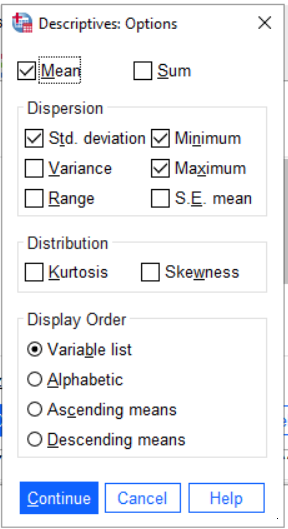
Frequencies
The command Analyze > Descriptive Statistics > Frequencies... [Alt+A E F] also produces statistics (although some statistics, like mean, only make sense if the variable is a scale variable, the mean of a nominal variable is undefined). Figure 3 shows the dialog box.
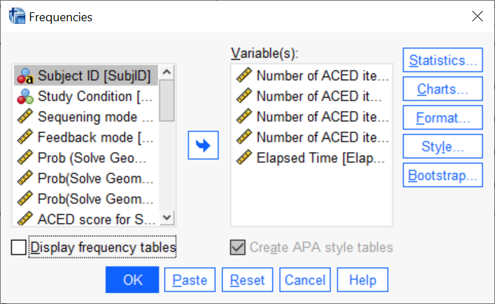 The Statistics... button allows you to select which statistics you want to display; Figure 4 shows that dialog. Note also that Display frequency tables is not checked. Unless there are only a few possible values (i.e., it is a nominal or ordinal variable) the resulting table is usually not very interesting.
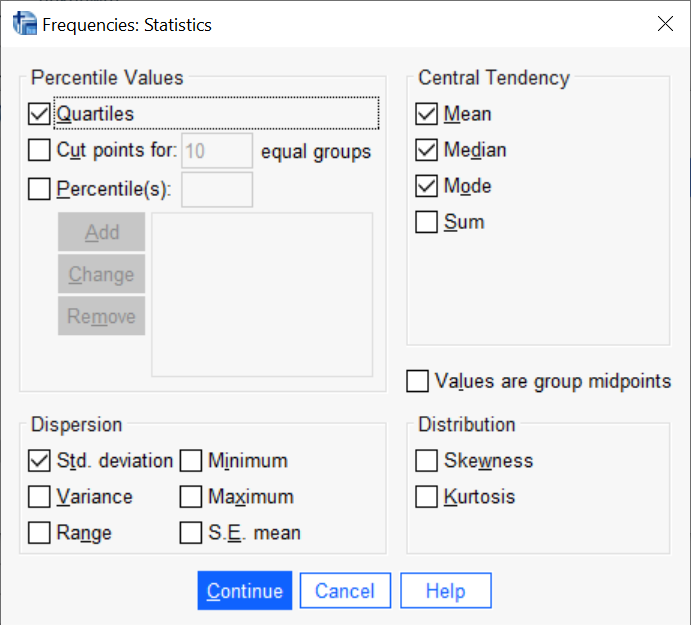
Table Styles
Both the descriptives and frequencies commands will produce a table in the SPSS output, typically in SPSS style (which shades the row and column headers). Although recent versions of SPSS produce tables which are not too difficult to read, they are not APA style. The table editor provides a means of changing the style of the table.
- Double click on the table to open it for editing.
- Look at the menu marked “Format > Table Looks…”
- “Academic” style is more or less APA style.
The result will look like Figure 5.

Be careful because SPSS tables often contain variables you don’t need, or way too many digits. Generally Speaking, the units for numbers should make the number of digits in the raw data. For questionnaires that are mostly counts, this means no decimals. For money, are you rounding to the nearest cent? dollar? hundred dollars?
- Means and medians can take one more digit (so if the raw data is an integer, round means to the nearest tenth).
- SDs can take two additional digits (so to the nearest hundredth).
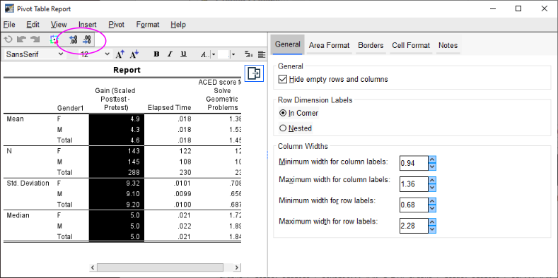
In the table editor (Figure 6, double click on the table to edit), select the cells you want to edit, and press the add or remove digits button to get a reasonable number of digits.
Tables are generally numbered Table n, where the numbers are in order of appearance. (Books use numbers of the form chapter.table; but papers, like the one you are writing for class,just use sequential numbers.) The space between Table and the number should be a non-breaking space. Give the caption a human readable description of what is in the table. The caption for a table goes above the table.
Caption the table in Word (or whatever word processor you are using) not SPSS, as you may need to renumber it later. Also, make sure that the table doesn’t split across page boundaries, or get separated from hits caption. (There are check boxes for these things in Word).
One-dimensional Graphical Summaries
Most of the commands for building graphs are located in the Graph > Legacy menu, Figure 7.

Graph > Legacy submenuHistograms
Graphs > Legacy Dialogs > Histogram... [Alt+G L I]
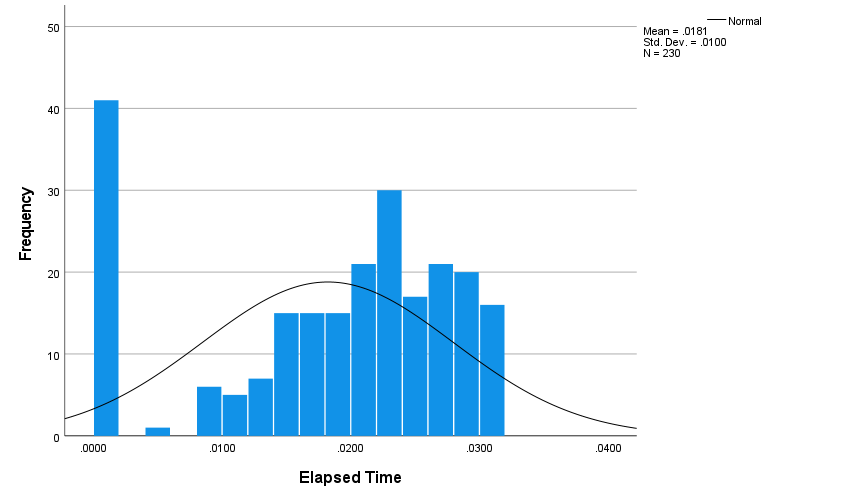
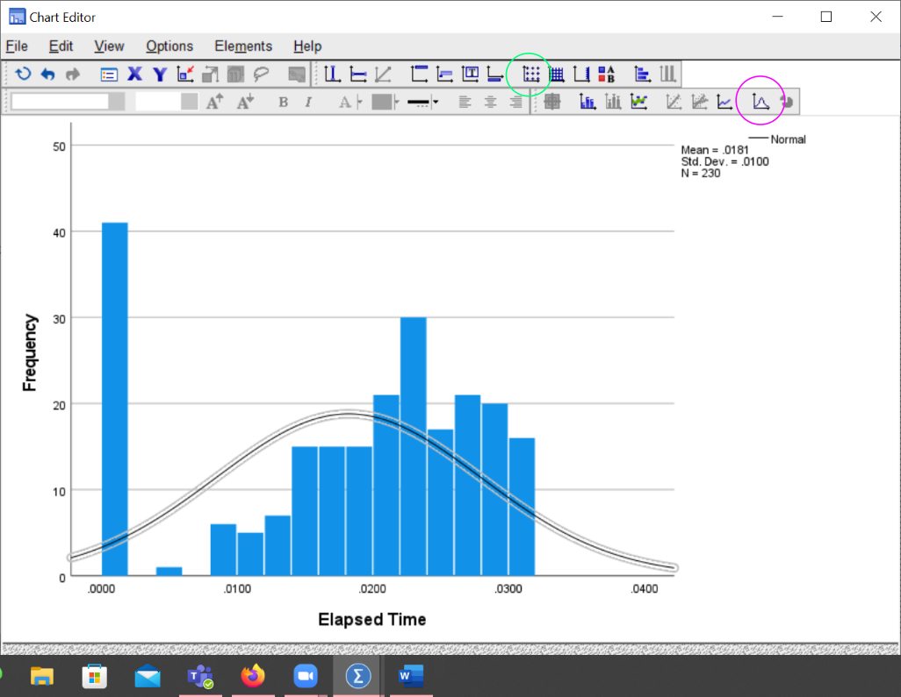
In the graph editor you can edit X and Y axis labels and play with the appearance of the graph.
The button with a grid of dots is used to open a dialog which can be used to adjust the number of bins in the histogram.
The button with the normal curve can be used to add a normal or other distributional curve.

Boxplots
Graphs > Legacy Dialogs > Boxplot... [Alt+G L X]
There are two modes in which you can draw boxplots: Each boxplot is a different variable, or each boxplot is a different group of cases. For a whole variable summary, pick variables.
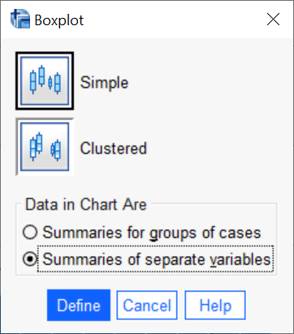
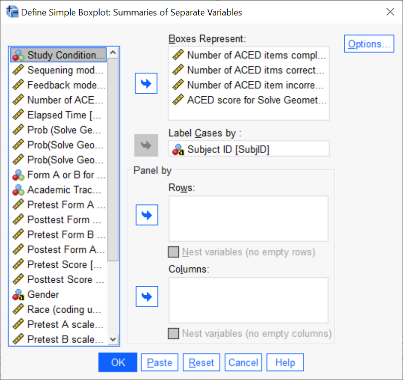
Select the variables you want. The “Case Labels” is optional, it gives you strings for identifying outliers instead of numbers.
Becareful that all of the variables need to be on compatible scales. In this cases, the “Correct” and “Incorrect” scores were out of 63 items, but the ACED score is on a different scale (-1 to 1); so it just doesn’t look good.
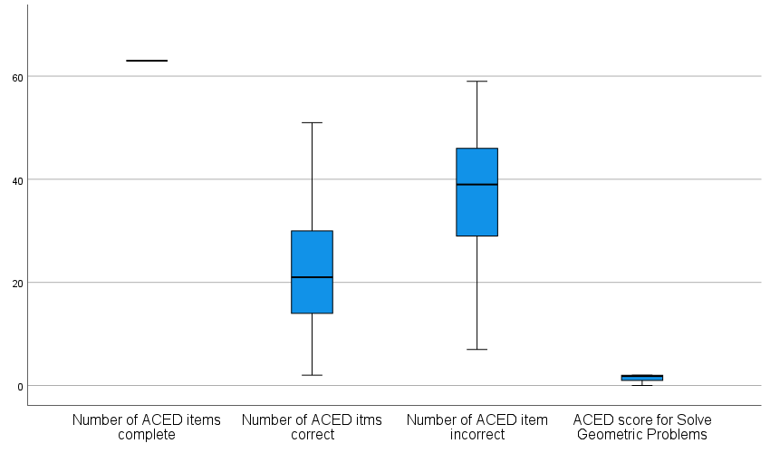
Barcharts
Graphs > Legacy Dialogs > Bar... [Alt+G L B]
There are a number of ways of doing bar charts. You can select them through the “mode selection dialog” that pops up when you select the bar charts menu option. function. (These mostly matter when you are looking at the relationship between two discrete variables.) Simple bar charts are used to summarize a single variable (often counts of cases), and the clustered and stacked look at two variables (usually at least one of which is categorical variables. By selecting “groups of cases”, the barplot will focus on the counts in each category.
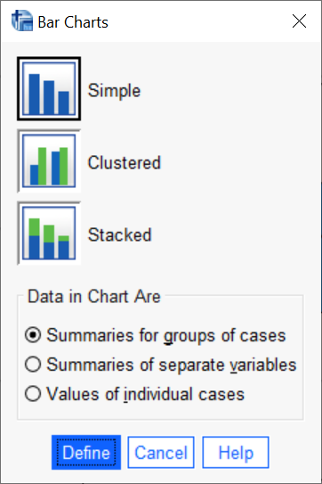
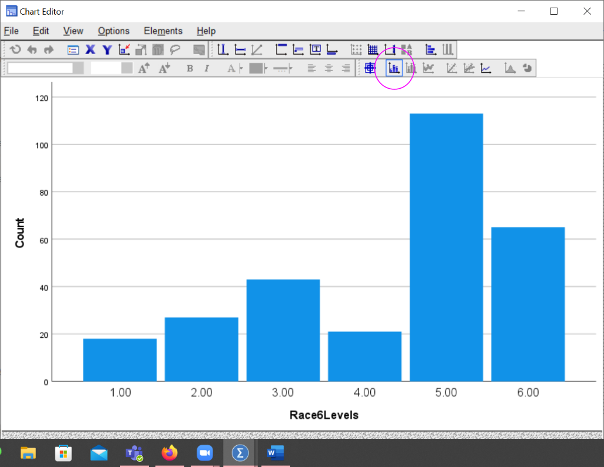
The icon with the numbers above the bars adds counts to the bars. (It works with pie charts, too).
Pie Charts
Graphs > Legacy Dialogs > Pie... [Alt+G L E]
- Angles are harder to judge than lengths, so pie charts are harder to read than bar charts.
- 3D pie charts add a visual rotation to the angle judgement, makeing them even worse than 2d pie charts.
- Pie charts give a better sense of part-of-whole than do bar charts.
Creating New Variables
SPSS allows you to perform mathematical operations on scale variables (and some logical operations on nominal and ordianl ones) to create new variables.
SPSS allows you to recode nominal and ordinal variables in several ways.
Compute Variables
Select Transform > Compute Variable ... [Alt+T C]
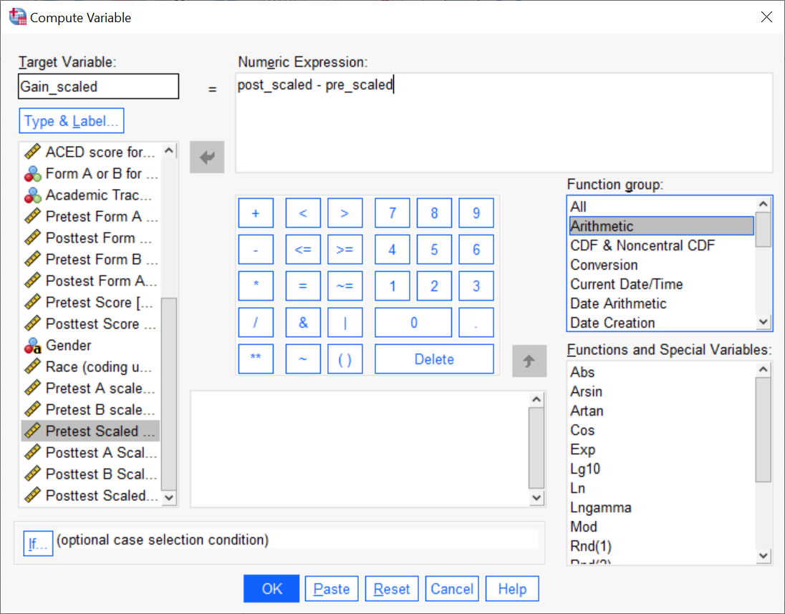
Recoding Variables
The Automatic Recode command will work for simple transformations of nominal variables, particularly translating strings to numbers.
The Recode into Different Categories... works for more complex cases, including dropping categories and adding missing values.
String to Numeric
There are some SPSS commands which prefer numeric values for nominal or ordinal values. Automatic Recode can be used to map strings to numbers.
Transform > Automatic Recode ... [Alt+T A]
 .
.
Note that SPSS assigns the numeric labels alphabetically. This is fine when the values are “Male” and “Female” as which one gets 1 and which 2 (in this case Female=1 and Male=2) is arbitrary. This can cause a problem when the natural order is not alphabetical (High=1, Medium=3, Low =2).
Collapsing Categories
Transform > Recode into Different Variables... [Alt+T R]
This function allows the analyst to collapse different categories. In the example below, categories 1, 4 and 5 are combined into a single new category 1, and 6, 7 and 8 are renumbered to close the gap.
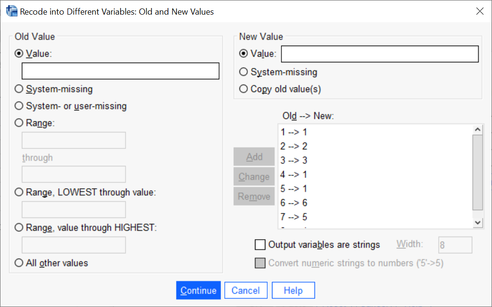
Breakdown by Category
Cross-tabs
Analyze > Compare Means > Means… [Alt+A M M] or Analyze > Descriptive Statistics > Crosstabs... [Alt+A E C]
The former is good for breaking a scale variable down by a nominal or ordinal one. The latter for breaking down a nominal or ordinal variable by the another nominal or ordinal variable.
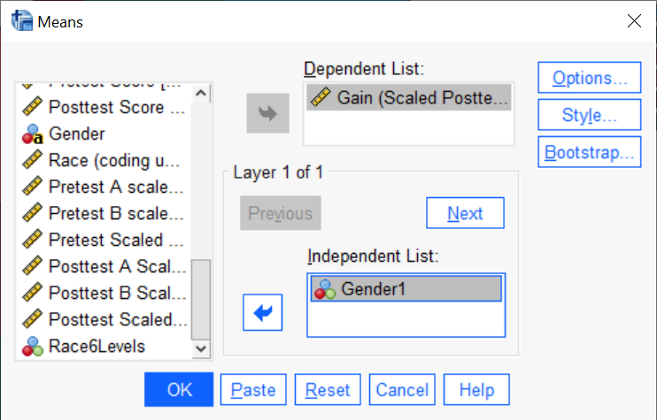
For the crosstabs, try both rows and columns, which one tells the story better. Also, don’t select more than one of “Row percentages”, “Column percentages”, or “Total percentages”, the table just gets too confusing.
Pivoting Tables
By default, SPSS does not lay out the compare Means table well. The analyst eye needs to jump over several rows in the table to compare the mean for Group 1 on Variable 1, to the mean for Group 2 on the same variable.
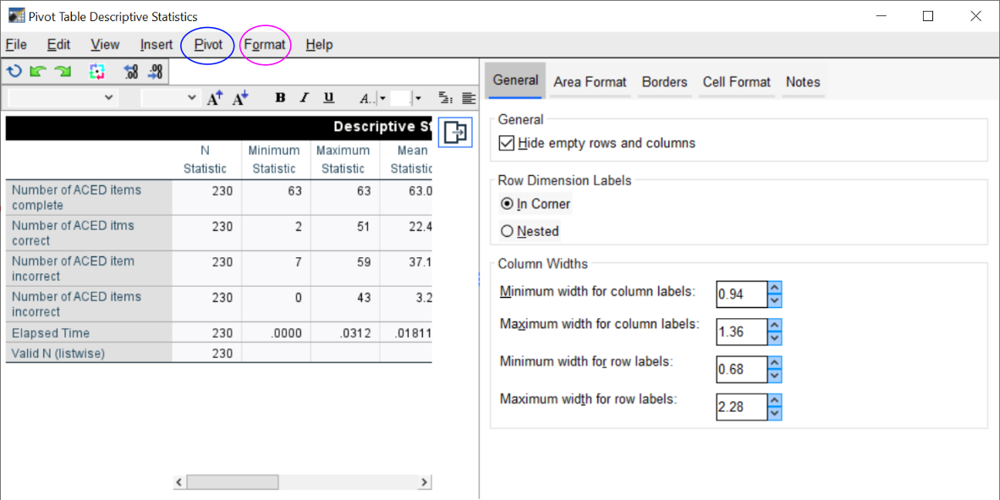
Pivoting the table can fix this. (This can be done in SPSS, or in a spreadsheet package like Excel.) Open the table editor, and select the “Pivot” icon. You can then drag the dimension labels to swap the rows and columns and which dimension is nested within which other dimension.
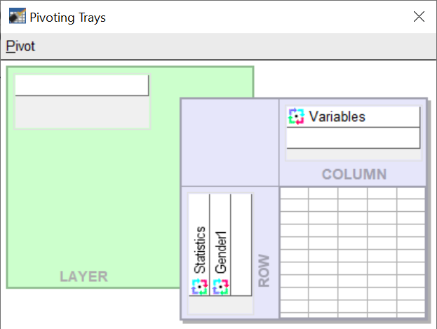
Boxplots and Barplots
Graphs > Legacy Dialogs > Boxplot... [Alt+G L X]
Now select the other mode in the boxplot:
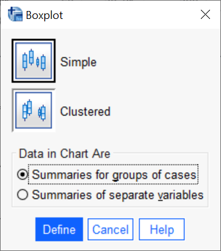
There is a new field “Category Axis” in the dialog, this is where the grouping variable goes.

Graphs > Legacy Dialogs > Bar... [Alt+G L B]
Bar charts are similar. When you have two categorical variables, sometimes swapping which one is the main variable and which defines the clusters will make a better plot. Try it both ways to see.
Paneling by Rows and Columns
Graphs > Legacy Dialogs > Histogram...[Alt+G L I],
Adding a grouping variable to the “Panel by Rows” field in the histogram dialog will produce multiple histograms that share an axis:

For histograms paneling by rows in much better than paneling by columns because it lines up the X-axis (it doesn’t matter as much with other graph types). The graph by race is paneled by rows. Note how this makes it easy to judge the difference in center or spread.
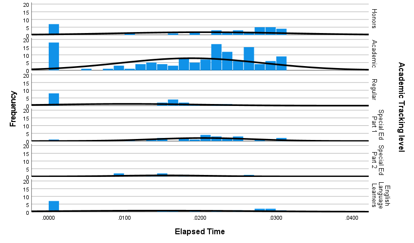
The histogram by columns is harder to read, even though there are fewer groups.
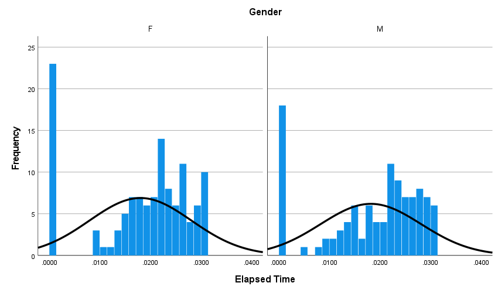
Looking at Subsets of Data
- (Temporarily) Remove outliers
- Temporarily Remove Group
Sensitivity Analysis: Remove potentially influential observations and see how much statistics change.
Data > Select Cases ... [Alt+D S]
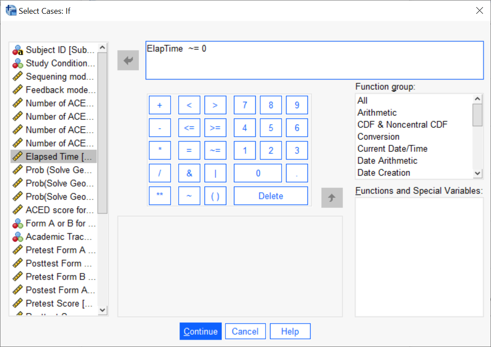
The rows will then disappear from the Variables view.
Looking at the count in the descriptions of a key variable can help check that it worked right:

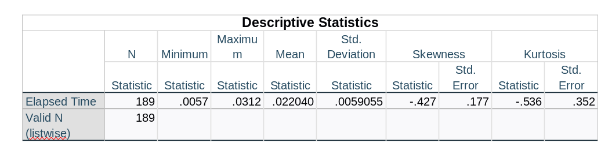
Don’t forget to reselect all cases when you are done!

Chosing Graphics
Just as a paper with too much text is hard to read, a paper with too many graphs is hard to read. Make sure that the graphs you use count. A table with just one or two important numbers, it better handled in the text, but a table that organizes a lot of numbers is really useful.
Make the figures and tables part of the story
The paper is telling a story, a story about the research question. Every figure and table included in the paper should be advancing that story in some way. If not, save it for use elsewhere.
Rule of thumb: Every figure and table should have a figure or table number, and should be referenced by number somewhere in the text. If its not referenced in the text, why waste the reader’s time.
Graphs at end, versus graphs in text
In the 20th century, manuscripts were often typewritten, and figures and tables were submitted on separate sheets. The manuscript would say some like <<FIGURE 1 ABOUT HERE>> where they wanted the figure. The publisher was then responsible for adding the figure. Generally the figure should be placed right after the first paragraph of mention. But if there is not enough room, it might “float” to the top of the next page.
I find it easier to read when figures and tables are in approximately the place that they will be in the final manuscript. While LaTeX does an excellent job of placing Figure and Tables, Microsoft Word (and Libre Office Writer, and Google Docs, and Apple Pages) aren’t quite so good. Especially, as paragraphs expand and contract, the figures may need to be moved for optimal placement. Because the figures can float, it is important to refer to them by number and not using position references like “above” or “below” which could change.
Be careful with tables. Word, by default, allows tables to split across page boundaries. This makes them harder to read. Unless the table is very long, it should be avoided. There should be an option to keep the table together in the table properties (the location, however, will vary with the word processor and the version of the word processor in use).
Sometimes, publishers in the 21st century still want all the figures at the end of the document. This is not an appendix, it is just the figures or tables. Once again, it is important to refer to them by number as the positions will be set later.
For the lab assignment, you may use either approach (but don’t try to mix them, that is just ugly).
Figures, Tables and Captions
Each figure and table should have a clear caption that tells the reader what is in the figure or table. Don’t use abbreviations. The APA convention is to put captions for figures above the figure and captions for tables below the figure. The caption should be done in the word processor, not SPSS, as the figures and tables may need to be renumbered. Also, the caption should be on the same page with the figure or table (or else it is “widowed”). There is often an option to “keep with next paragraph” in the paragraph dialog.
Figures and tables are numbered separately, usually with consecutive integers. (Books will sometimes use number of the form chapter.figure, but papers usually use a single number.) Generally figure numbers start with Figure or Fig. and table numbers with Table or Tab. The F or T is capitalized when “figure” or “table” is followed by a number, and it become a proper noun (i.e., it does not take an article like “the” or “a”). If referring to it in the text, it is better to put a non-breaking space between the word and the number, so this does not split across lines. The easiest way to reference a figure or table is to just put (Figure xxx) or (Table yyy) after the sentence where it is referenced. The word “see” is implied and is usually omitted to save space.
Meaningful Labels
To an analyst in the middle of project, the short code names given to variables (e.g., “GADD” or “hyper”) are familiar friends. When preparing tables and graphs for exploratory use, it is fine to use these abbreviated names. When it come time to prepare the graph or table for publication, be kind to the reader who is often not a member of the research team. The short SPSS variable names should be replaced with longer, human readable names. If there is additional data (such as units) it is often good to put this there as well. So while “Population” is better than “Pop.”, “Population (in thousands)” is better still.
SPSS provides an easy way to do this: go into the variables view and add a “Label” to each variable. While the variable name is a short and must follow certain conventions (e.g., no spaces) the label can be any descriptive string. SPSS will use labels for axis labels on graphs and column/row labels in tables if it has them.
Also, take some time to make the captions on the tables and graphs provide as much information as possible. It should be able to get a good idea of what is in the table while only skimming the text. If there are abbreviations in the table or graph that need explanation, add a footnote to the table.
Digits and Unnecessary Statistics
Using too many digits in a statistic is confusing. It gives the spurious impression of precision. If the average salary of a teacher was $52,752.345 versus $52,752.346 does anybody really care.
The rule of thumb I use is to look at the number of digits used in the measurement. (In the ALEC data, almost everything is a count, so that is 0 significant digits.) I use one more digit for the mean, and two more for the standard deviation. I usually report correlations to 2 or 3 digits (depending on how big it is) and the same thing with probabilities. (BTW, probabilities and correlations in APA style don’t take a leading zero.)
However, there are some exceptions. For example, SAT scores come in multiple of tens, so there should be no digits after the decimal for means and only one digit for the Standard Deviation.
You may find this article on reporting statistics in APA style useful.
Your Mission
The variables in the lab can be grouped into several categories:
Study Condition: Group
Background Variables: Gender, Year, Age, Ethnicity
SAT: SAT, SATVERBAL, SATQUANT, SATWRIT
- Also, create SATTOTAL by adding Verbal and Quant
Anxiety Measures: GADD, genaxa
Panic Measures: PAG, paa
ADHD Measures: inatt, hyper
- The complete ADHD measure is the sum of inatt and hyper.
- Note carefully that the sample size for the ADHD measure is much smaller than for the background variables. Why this discrepancy and who is missing?
Describe how the sample is broken down by “Year”. Also, look at the relationship between “Year” and “group”. You will want to use a graph or table to support your results.
Describe the distribution of Age in the sample. You should include measures of center and scale and a description of skewness and kurtosis. Include a figure which shows the distribution.
Describe the distribution of the SATTOTAL (note, you will need to compute this variable, it is not in the original data set). Again, include center, scale, skewness, kurtosis and a figure to support the latter.
Describe the distribution of the anxiety and panic measures. Again, include center, scale, skewness, kurtosis and a figure to support the latter.
Describe the distribution of the inatt, hyper, and total ADHD symptoms measures (you will need to compute this). Again, include center, scale, skewness, kurtosis and a figure to support the latter.
Pick on of the anxiety or panic measures and describe how it differs across year in school (Freshman, Junior, &c.).
You can append this information to the Part 1 draft: this is the first subsection in the “Results” section.
Rubric for the Lab
Here are the score points for the technical steps in Part 2:
Create Combined variables (SATTOTAL and ADHDSymptoms) [10 pts]
Histograms, boxplots, (interval and ratio scale variables) or barplots (nominal and ordinal variables) for all variables. [10 points]
Text summaries which includes information about center, scale and pointers to the figure. [10 pts]
Anxiety (or Panic) by Year Comparision (text) [10 pts]
Anxiety (or Panic) by Year Comparison (graphs and tables) [10 pts]
Year by Group description. [10 pt]
Style accounts for the remaining 40 points.
- Text style [20 pts]
- Pay close attention to sequencing the analyses in a way that makes them easy for the reader to follow.
- Make sure that figures and tables have numbers & captions, are referenced in the text and don’t split across pages or get separated from their captions.
- Pay close attention to sequencing the analyses in a way that makes them easy for the reader to follow.
- Graph and Table Style [20 pts]
- Labels should be human readable, not SPSS variable names.
- Reasonable number of digits.
- Don’t include unnecessary statistics.
- Make sure that the figure or table is part of the story of your paper.